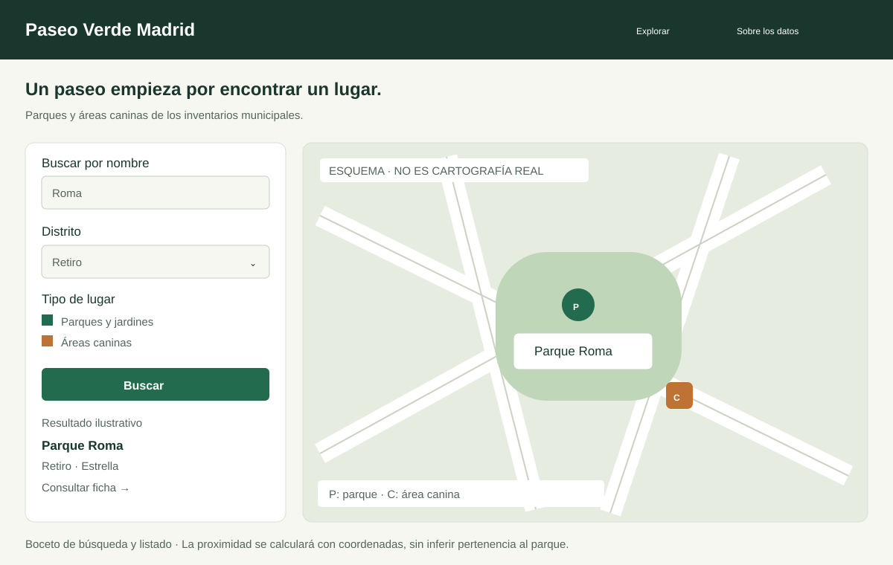
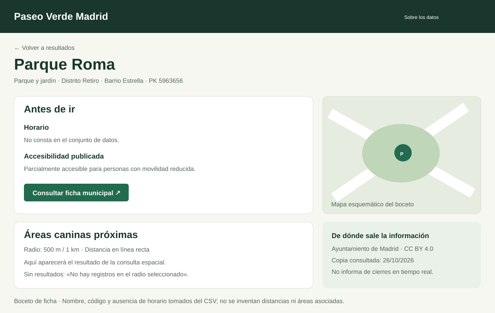
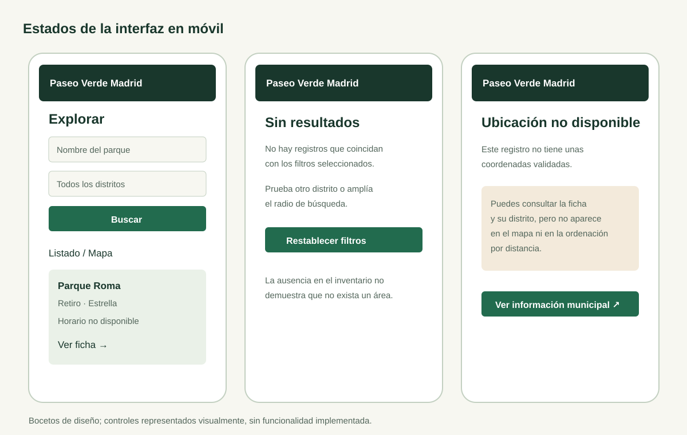

1. Qué se quiere resolver
Paseo Verde Madrid será una aplicación para consultar parques, jardines y áreas caninas municipales en un mismo lugar. Permitirá buscar por distrito, revisar la información de un parque y localizar áreas caninas próximas. Está pensada para personas que quieren preparar un paseo, especialmente con perro, y para quienes desean explorar espacios verdes de su zona.
El valor de la propuesta está en relacionar dos inventarios que hoy se consultan por separado: ubicación territorial común, proximidad entre equipamientos y conexión de parques o distritos con entidades externas. El objetivo de esta entrega es seleccionar datos y fijar requisitos. No se presenta una aplicación ya construida ni un grafo RDF ya publicado.
Escenario principal
Una persona selecciona Retiro, encuentra Parque Roma, abre su ficha y consulta las áreas caninas registradas dentro de un radio elegido. Puede volver a la ficha municipal para ampliar o contrastar la información.
Alcance inicial
Dos tipos de equipamientos, búsqueda, filtros territoriales, mapa, fichas y consulta de cercanía. El listado sigue siendo útil para registros que todavía no tengan coordenadas validadas.
2. Requisitos funcionales verificables
| ID | Requisito | Fuente / criterio de aceptación |
|---|---|---|
| RF01 | Buscar parques por nombre, ignorando mayúsculas y tildes para la búsqueda, sin cambiar la etiqueta mostrada. | NOMBRE. Buscar «roma» debe recuperar el registro PK 5963656. |
| RF02 | Filtrar por distrito y por tipo: parque/jardín o área canina. Ofrecer «Sin distrito validado» para los registros pendientes. | COD-DISTRITO / COD_DISTRITO y etiquetas contrastadas. «3» y «03» deben referirse a Retiro; el literal «DISTRITO» no se ofrece como distrito real. |
| RF03 | Mostrar listado y mapa de resultados coherentes. Cada tipo tendrá símbolo y etiqueta propios, no solo un color. | Las coordenadas ausentes o no validadas no se dibujan como 0,0. El listado informa de esos registros; el mapa indica cuántos no puede representar. |
| RF04 | Abrir una ficha con nombre o categoría, ID, dirección disponible, distrito, barrio y enlace a la fuente. | Para áreas caninas se usa «Área canina — dirección/ID», porque no existe un campo de nombre propio. |
| RF05 | Mostrar el horario del parque como texto, o «No consta en el conjunto de datos» si está vacío. | HORARIO. Parque Roma no debe mostrarse como abierto 24 horas por tener el campo vacío. |
| RF06 | Mostrar la accesibilidad publicada del parque con su significado, sin generalizarla al recorrido o a las áreas caninas. | ACCESIBILIDAD: 0 no accesible; 1 accesible; 2 parcialmente accesible. Los demás códigos se tratarán según la documentación si aparecen en futuras copias. |
| RF07 | Desde un parque con posición válida, buscar áreas caninas dentro de 500 m o 1 km y ordenarlas por distancia. | Coordenadas transformadas y validadas. Se usará distancia geodésica en línea recta; no ruta ni duración. Se incluirán todos los distritos en la búsqueda espacial para no perder áreas al otro lado de un límite administrativo. |
| RF08 | Permitir elegir un punto sobre el mapa como origen para ordenar lugares por cercanía, sin solicitar ubicación del dispositivo. | Sin punto seleccionado se ordena alfabéticamente. No se conserva un historial de posiciones ni se pide crear una cuenta. |
| RF09 | Mostrar «OPERATIVO según la copia consultada» para las áreas que tengan ese valor. | ESTADO. Se informa de la fecha del archivo; no se convierte el estado del inventario en una garantía de servicio actual. |
| RF10 | Mostrar fecha de la copia, editor, licencia y enlace al catálogo de cada tipo de dato. | La sección «Sobre los datos» permite distinguir la fecha de descarga del proyecto de la fecha de actualización que declare el portal. |
| RF11 | Ofrecer enlaces externos de parques y distritos únicamente cuando la correspondencia esté validada. | Wikidata. El distrito Retiro y el parque del Retiro deben conservar identidades distintas. |
| RF12 | Informar de cero resultados, error de carga y datos faltantes; permitir restablecer filtros. | Un fallo al cargar datos nunca se presenta como «0 parques». El listado debe seguir siendo la alternativa al mapa. |
3. Interfaz prevista y bocetos
La navegación tendrá tres vistas: explorar, ficha del lugar y sobre los datos. En escritorio, los filtros y resultados acompañan al mapa. En móvil, el usuario alterna listado y mapa para evitar una pantalla demasiado estrecha.

- Introducir un nombre o seleccionar distrito y tipo; pulsar «Buscar».
- Consultar un resultado en el listado o en el mapa y abrir su ficha.
- Elegir un radio para consultar áreas caninas próximas. Si no hay coordenadas validadas, se explica por qué no está disponible esa función.
- Consultar la ficha municipal o los enlaces externos verificados.

La ficha de un área canina mantendrá la misma estructura, sustituyendo horario y accesibilidad por estado publicado y dirección disponible. No trasladará automáticamente las características del parque más cercano a la zona canina.

Vista «Sobre los datos»
Incluirá título de cada inventario, atribución, licencia, enlaces de origen, fecha de la copia y limitaciones de cobertura. También explicará el significado de «distancia en línea recta», «sin coordenadas» y «estado publicado».
4. Preguntas que deberá responder el grafo
| Pregunta de competencia | Información necesaria | Relación con requisitos |
|---|---|---|
| PC01 · ¿Qué parques y áreas caninas constan en el distrito Retiro? | Tipo, etiqueta y relación normalizada con distrito 03. | RF02–RF04. |
| PC02 · ¿Cuál es la ficha y la accesibilidad publicada de Parque Roma? | PK 5963656, etiqueta, código de accesibilidad y URL municipal. | RF04–RF06. |
| PC03 · ¿Qué áreas caninas están a no más de 1 km del punto representativo de un parque? | Geometrías validadas y distancia calculada. La respuesta no establece contención. | RF07. |
| PC04 · ¿Qué registros no tienen coordenadas o distrito validados? | Estado de calidad y procedencia de cada registro. | RF03 y RF12. |
| PC05 · ¿Qué parques o distritos están enlazados a Wikidata y con qué entidad? | URI local, URI externa y evidencia de correspondencia. | RF11. |
| PC06 · ¿De qué conjunto y copia procede cada dato mostrado? | Identificador de fuente, URL, fecha de descarga y licencia. | RF09–RF10. |
Estas son preguntas de diseño, no consultas SPARQL ya implementadas. La conversión a RDF, la selección definitiva de ontologías, la carga en un repositorio y el desarrollo de la aplicación se abordarán en entregas posteriores.
5. Requisitos no funcionales y aceptación
| ID | Objetivo | Cómo se comprobará |
|---|---|---|
| RNF01 · Uso en móvil | Sin desplazamiento horizontal de la interfaz a partir de 360 px; filtros, lista y ficha legibles. | Revisar 360, 768 y 1280 px en la implementación. Los documentos de esta entrega son adaptables; los bocetos son imágenes de diseño. |
| RNF02 · Acceso por teclado | Controles etiquetados, foco visible, orden de tabulación lógico y alternativa textual al mapa. | Recorrer el flujo sin ratón. No se declara certificación de accesibilidad. |
| RNF03 · Respuesta | Tras cargar los datos, búsqueda o filtrado en menos de 2 segundos con esta escala de datos en un ordenador de aula. | Objetivo pendiente de medición en la aplicación; no se presenta como resultado ya obtenido. |
| RNF04 · Integridad | No perder registros por un campo opcional vacío; claves estables y sin duplicados. | Comparar recuentos de originales, datos preparados y RDF, explicando exclusiones de mapas o filtros. |
| RNF05 · Privacidad | Consulta sin cuenta ni geolocalización obligatoria. | Completar el caso principal seleccionando distrito o un punto manual, sin pedir datos personales. |
| RNF06 · Reproducibilidad | Conservar datos de origen, licencia y cambios del procesamiento. | Verificar huellas SHA-256 y permitir rehacer la preparación desde la instantánea incluida. |
Casos de aceptación mínimos
- CA01: «Roma» + «Retiro» recupera Parque Roma, PK 5963656.
- CA02: su ficha muestra «horario no disponible» y accesibilidad parcial; nunca horario de 24 horas ni accesibilidad total.
- CA03: las áreas con código 03 y los parques con código 3 se relacionan con el mismo distrito; los parques con etiqueta «DISTRITO» se presentan como pendientes de validación.
- CA04: un área canina con X/Y y sin latitud/longitud se representa solo después de transformar y validar la posición. Si falla la conversión, sigue accesible en listado.
- CA05: al buscar cercanía se distingue «sin registros dentro del radio» de «datos no cargados».
- CA06: las relaciones espaciales se calculan con coordenadas compatibles y se etiquetan como distancia en línea recta.
6. Viabilidad y siguientes fases
- Primera entrega: datos originales, evaluación R1–R6, requisitos y bocetos. Los cinco integrantes están identificados y la carpeta de entrega es Group05.
- Preparación: normalizar distritos, tratar valores ausentes, transformar coordenadas y registrar decisiones. La prueba de conversión con los tres pares publicados ya ha permitido comprobar la viabilidad geográfica de esta copia.
- Modelo y transformación RDF: representar parques, áreas y distritos con URI estables, procedencia y vocabularios seleccionados. Validar recuentos, tipos y relaciones.
- Enlazado: revisar candidatos de Wikidata y publicar solo correspondencias justificadas; no hacer equivalencias por proximidad o por coincidencia parcial del nombre.
- Aplicación: implementar las vistas y consultas, comprobar los casos de aceptación y documentar las limitaciones que permanezcan.
El volumen inicial es pequeño y manejable con las herramientas del curso. Los riesgos principales son las coordenadas incompletas, las etiquetas territoriales anómalas y una documentación canina antigua. Las funciones se limitan a lo verificable con los campos actuales para que el proyecto pueda continuar sin depender de datos nuevos o de servicios de pago.